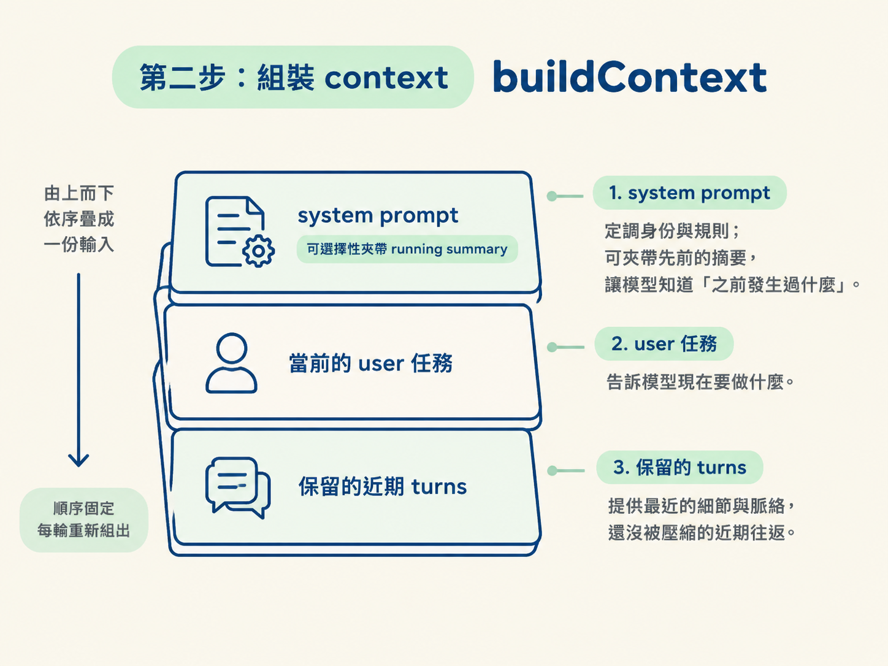
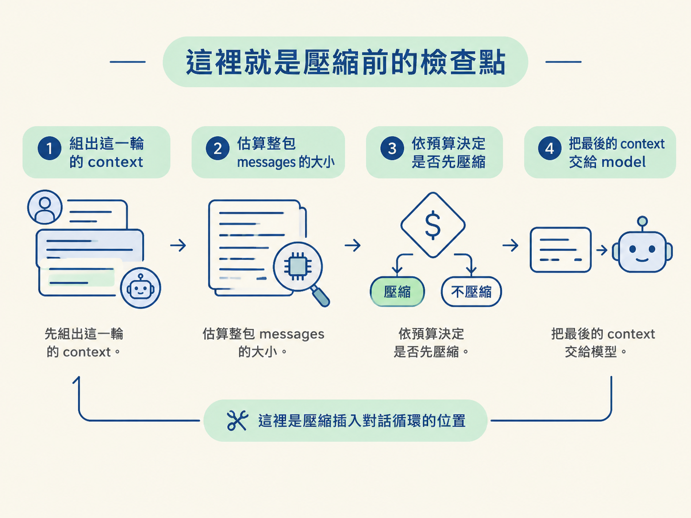

模型每次回應前，真正看到的不是一份永遠增長的對話紀錄，而是這一輪重新組出的 messages。要控制 token 預算，你得先量出整包輸入有多大，再決定哪些內容放進 context。
這一步會實作 estimateTokens 與 buildContext：前者估算整段 context 的大小，後者把 system prompt、可選的 running summary、當前任務，以及保留的 turns 組成模型實際看到的 messages。
estimateTokens要管理預算，先要有一把尺。壓縮的觸發條件是「這一輪的輸入太大」，因此我們需要回答一個問題：這整包 messages 大約有多少 token？
重點是量整包，不是只量最後一句，也不是把每則訊息當成互不相關的項目。模型一次吃掉整段輸入，預算也應該以整段輸入為單位。
export function estimateTokens(messages: ModelMessage[]): number {
const text = messages
.map((m) => (typeof m.content === "string" ? m.content : JSON.stringify(m.content)))
.join(" ");
return Math.ceil(text.length / 4);
}程式裡除以的「4」不是神秘常數。英文通常約四個字元對應一個 token，因此 text.length / 4 是便宜、可用的近似值。
但在生產環境，這樣的估算不夠可靠。正式做法應該使用與模型相同的 tokenizer（分詞器／編碼器），例如 TikToken 這類標準工具。若你的尺和模型實際採用的編碼方式不同，你以為輸入是 499 token，模型可能已經算成 640 token，壓縮就會慢一步。
課程先使用這個簡化估算，是為了省下工具鏈的摩擦；真正重要的機制沒有改變：先估算，再依預算做決策。
輸入與輸出是兩種不同的預算。通常輸出的預算比較小、單價比較高；輸入則可能較大量但較便宜。談 token budget（token 預算）時，要先說清楚指的是哪一邊。
buildContext有了估算器，接下來是核心：buildContext。它是「這一輪模型看到什麼」的唯一出口。每次使用者送來新訊息，都重新組出一個全新的 messages 陣列。
順序固定成三層：
| 順序 | 內容 | 作用 |
|---|---|---|
| 1. system | agent 的 system prompt，可選擇性夾帶先前的 running summary | 定調身份與規則；摘要讓模型知道「之前發生過什麼」 |
| 2. user | 這次要處理的任務 | 告訴模型現在要做什麼 |
| 3. 保留的 turns | 還沒被壓縮的近期往返 | 提供最近的細節與脈絡 |

export function buildContext(
systemPrompt: string,
task: string,
summary: string,
turns: ModelMessage[],
): ModelMessage[] {
const system = summary
? `${systemPrompt}\n\n## Previous work (summarized)\n${summary}`
: systemPrompt;
return [
{ role: "system", content: system },
{ role: "user", content: task },
...turns,
];
}這段實作有一個容易被忽略的選擇：摘要是接在原本的 system prompt 後面，而不是另外加入一則 role: "system" 的訊息。
原因是，messages 實務上應維持只有一則 system 訊息。有些 API 遇到多個 system role 會直接報錯，有些則會提出警告。比較安全的做法，是把摘要附加到既有 system 內容的尾端。
// 好：摘要附加進同一個 system
`${systemPrompt}\n\n## Previous work (summarized)\n${summary}`
// 壞：變成兩則 system，可能報錯或警告
[{ role: "system", content: systemPrompt },
{ role: "system", content: summary }]messages 的結尾也有規則：最後一則必須是 user 或 tool 訊息。模型是在回應最後一則訊息；如果最後一則是 assistant 自己先前說的話，就沒有新的輸入可以接續處理。
這也說明了 buildContext 為什麼採用 system → user → turns 的順序：先放入新的任務，讓模型知道目前要完成什麼；再接上保留的 turns，提供近期細節與脈絡。
buildContext 每輪都會被呼叫，而且手上正好有「準備送給模型的完整內容」。因此，這裡自然成為判斷是否需要壓縮的位置：

第四步把這段流程接進 runtime 時，這個順序會成為重要的約束。
這兩支函式的責任很單純：一支用尺量大小，一支按照固定順序組出訊息。真正要記住的是兩個設計直覺：用尺管理預算，以及把每一輪輸入視為重新計算的產物，而不是一份只會增加、永遠不整理的對話檔。